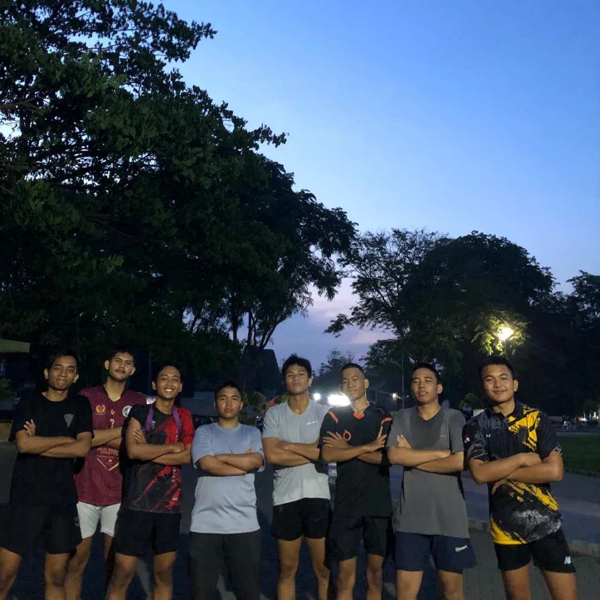
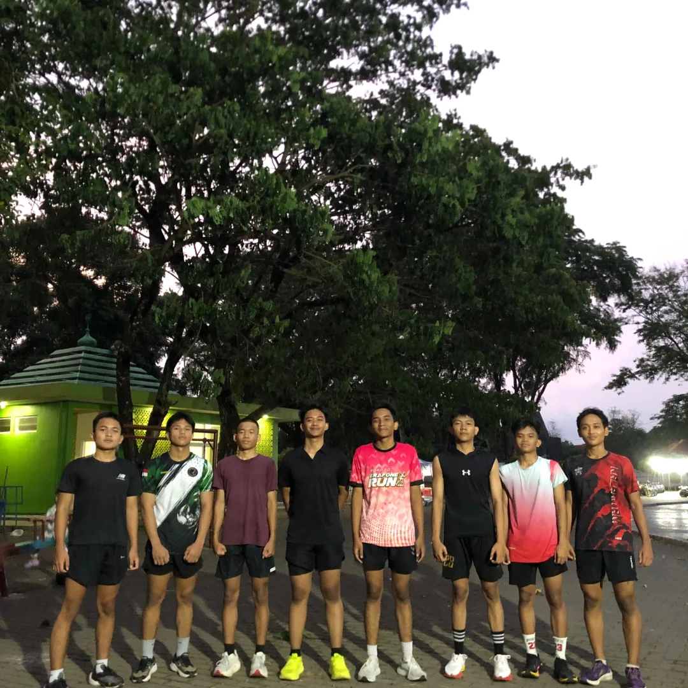
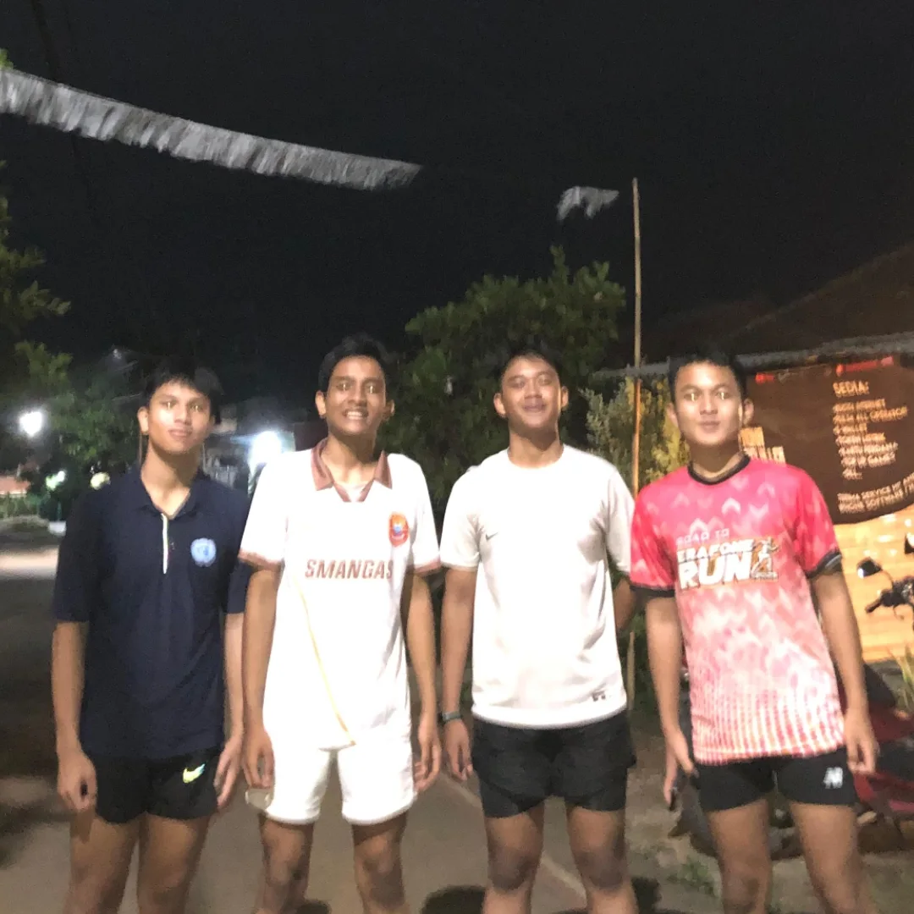

MOMEN KAMI




JERSEY STRIDE LEGACY SUBANG DENGAN TEMA "INDONESIAN CULTURE".
Stride Legacy Subang merupakan komunitas yang berdedikasi untuk menciptakan jejak dan warisan bagi masa depan melalui setiap langkah. Kami mendorong semangat kebersamaan, hidup sehat, dan pencapaian pribadi pada setiap anggota ataupun masyarakat kabupaten Subang.
Bergabung dengan kami untuk meraih kebugaran, kebersamaan, dan pengalaman yang tak terlupakan.
📍 GOR LAPANG PELANGI - SUBANG
Hari Senin, Rabu, Jumat. Pukul 15.30 WIB
Program menyesuaikan
📍 Menyesuaikan
Hari Minggu
Swimming, Belajar akademik bersama, dll
📍 Berbagai Lokasi
Mengikuti berbagai macam event olahraga. Contoh: Race Running, Fun Running, dll yang mengatasnamakan komunitas
Siap untuk melangkah dan meninggalkan jejak atau warisan bagi masa depan? Isi formulir pendaftaran resmi kami dan mari bergabung!
ISI FORMULIR PENDAFTARAN